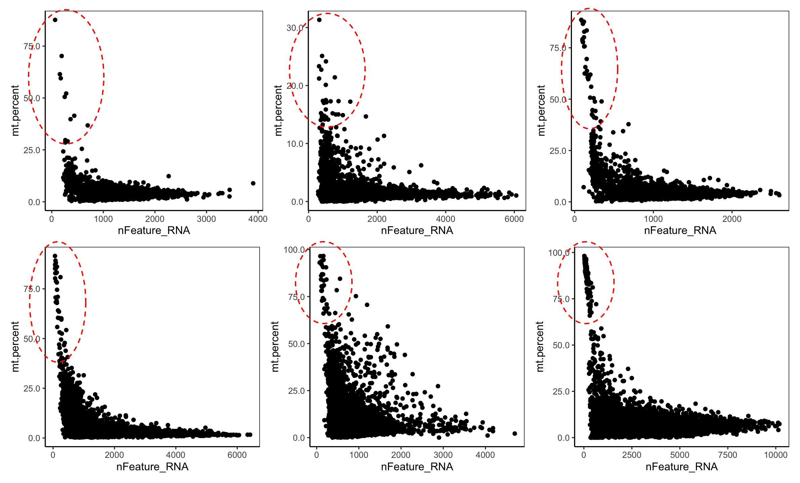
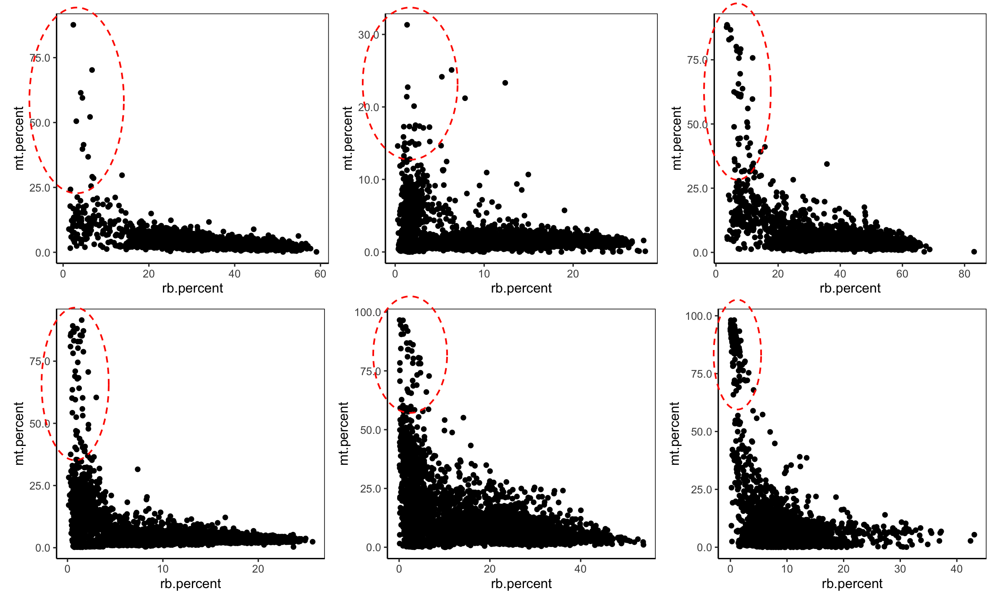

Damage Simulation Model
Context
Single cell RNA sequencing (scRNA-seq) data
This work is focusing on developing a model to simulate damaged cells in single cell RNA sequencing (scRNA-seq) data. The data comes in the form of a matrix where each column is a cell and each row is a gene, meaning each entry is the expression of that gene within the cell. Biologically, the majority of genes in the human genome are not expressed in every cell (more than 20 000 protein coding genes in total but an average of less than 5000 expressed in each cell). As a result, single cell data is very sparse with most entries being zero. There are many other complexities of scRNA-seq data, in addition to the nuances inherent in the biology of what is being sequenced. In our case, rather than modelling new single cell data, we are interested in using existing scRNA-seq data and altering it to resemble damaged scRNA-seq data.
Characteristics of damage in scRNA-seq
Damaged cells can exist in single cell data for reasons such as experiencing stressful conditions during cell capture before sequencing or through the trauma of the sequencing protocol itself. Regardless of how damaged cells are created, we assume they express the same physical trait: a ruptured cell membrane. This results in the cellular contents we intend to sequence, RNA, being lost as they leak out of the membrane and escape before ever getting the chance to be sequenced. However, certain RNA species are contained within additional subcellular structures known as mitochondria. Each mitochondrion has its own membrane and internal organisation providing a protected environment meaning RNA housed here is very unlikely to be lost during cell damage. As a result, a common marker of damage is the elevated contribution of mitochondrial genes to the total gene expression of a cell. Usually, the contribution of mitochondrial genes is minimal, which makes sense seeing that there are only 37 mitochondrial genes in total in the human genome. The process of damage is shown at a small scale in the example below looking at the expression level of 1 mitochondrial (M) and 1 non-mitochondrial (G) gene in a cell,
When looking at existing scRNA-seq data, we notice that the relationship between the mitochondrial proportion and the number of expressed genes (genes where expression is greater than 0) follows that typical of exponential decay. This makes sense as the more genes are expressed by a cell, the lower the contribution of mitochondrial genes to the cell’s total gene count tends to be. This is magnified in the case of damage where extremely high mitochondrial proportions occur only in cells where the total number of expressed genes is very low. Below are 6 plots of publicly available single cell datasets that, like most datasets, follow the exponential decay distribution. Being unfiltered, we even see populations of cells we assume to be damaged (circled in red)

Another valuable metric is the proportion of the total gene expression coming from another set of genes known as ribosomal genes. Ribosomal RNA is located in the cytoplasm, the part of the cell where RNA is vulnerable to being lost in the event of damage, and unlike most RNA is ubiquitously expressed in all cells due to its fundamental role in protein synthesis. In the event of damage, we therefore expect the ribosomal proportion to decrease. Looking at the same 6 datasets explored above, we see that the proportion of mitochondrial and ribosomal expression in cells follow a very similar if not identical distribution to that seen above.

However, looking at the data of experimentally verified damaged cells, we see that not all damaged cells exist in this extreme phenotype/ in this extreme position on the plots. In fact, there is often a larger population of damaged cells that resemble normal cells. This is shown below where all coloured cells were experimentally verified to be damaged yet only the red ones show typical characteristics of damage. We suggest this describes a system where cells can experience damage-inducing stress without fully succumbing to damage but once they do, the damage is induced rapidly.
Modelling goal and outline
Using an input count matrix, the goal is to extract cells, alter their gene expression to resemble damaged cells, and reintroduce them to the count matrix.
My idea is to generate a reduction factor for each cell to multiply by all the non-mitochondrial counts of the cell. In this way, the resulting mitochondrial proportion must increase as the total counts of the cell coming from non-mitochondrial genes decreases. Additionally, after being multiplied by the reduction factor, the non-mitochondrial counts must be rounded to the nearest whole number which results in many of the genes with very low counts becoming zero, a natural outcome which helps reduce the total number of features.
The challenge is to select reduction factors for each cell in a way that preserves the exponential decay relationships of the dataset. The number of cells residing in different areas of the exponential decay distribution is expected to change (more in the top left) but the shape must be retained.
Parameters
\(A\) - the proportion of final RNA that comes from mitochondrial genes in a cell
\(B\) - the proportion of final RNA that comes from ribosomal genes in a cell
\(C\) - the total number of non-zero genes expressed in a cell
Where the relationship between A, B and C are as follows, \[ B = e^{-\lambda A} \] \[ C = e^{-\lambda A} \]
Then, looking at each term we define \(c_m\) - the inital mitochondrial counts in a cell (fixed) \(c_r\) - the initial ribosomal counts in a cell \(c_o\) - the initial non-mitochondrial and non-ribosomal (referred to as ‘other’) counts in a cell \(R\) - reduction factor for a cell
with the following relationships,
\[ A = \frac{c_m}{c_m + R \cdot (c_r + c_o)} \]
\[ B = \frac{R \cdot c_r}{c_m + R \cdot (c_r + c_o)} \] And
\(f_m\) - the final number of non-zero mitochondrial genes (fixed)
\(f_r\) - the final number of non-zero ribosomal genes
\(f_o\) - the final number of non-zero non-mitochondrial and non-ribosomal genes
\[ C = f_m + f_r + f_o \]
where the number of non-zero features for each group is found after reduction has been applied and the result is rounded to the nearest whole number.
Model assumptions
Each cell in a sample has an equal probability of becoming damaged. (The idea is that a user will input a desired proportion of damaged cells, say 10 % to inform how many cells in in the input matrix are damaged, but which cells are selected is random)
The physical manifestation of damage varies among cells in a sample and follows a bimodal distribution modeled by two beta distributions: one near 0 (low manifestation) and one near 1 (high manifestation). This reflects our biological assumption that cells can sustain moderate damage without visible effects, but once a threshold is crossed, damage manifestations accumulate. (The idea is to use beta distributions so it is easy to control the positioning of each distribution and the relative proportions of each, for example, if you want to focus on only extensively damaged cells rather than relatively undamaged ones)
In scRNA-seq data, the detectable manifestation of damage is the loss of cytoplasmic RNA while RNA that experiences further compartmentalization, such as mitochondrial and certain nuclear-residing RNA, is protected (related to intracellular leakage through the degraded plasma membrane of the damaged cell). (Which genes are protected have been selected by literature review)
Cytoplasmic RNA loss is uniform across a cell and scales exponentially with the cell’s degree of physical manifestation of damage. In other words, we assume cells with greater damage manifestations experience exponentially greater RNA loss than cells with milder manifestations.
While cytoplasmic RNA loss is uniform, transcripts with lower counts are more likely to become lost than those with higher counts. (This often occurs naturally due to rounding counts to whole numbers)
Current challenges in implementation
Different approaches for finding suitable reduction factors have been attempted there has been difficulty in the following areas:
- For some reason related to the reduction, the resulting relationship between the ribosomal and mitochondrial proportion is often too linear.
b. When I can achieve a ribosomal proportion following the target exponential decay shape, the number of features are reduced too greatly resulting in almost no expression left for the cell. this results in the damaged cells being expressed in completely distinct clusters from other cells (which we do not really want, we expect them to be relatively similar to the original population from which they came).
c. Sometimes despite applying the reduction factor, there are virtually no visible changes to the data.
Test data
The testing data can be accessed in R or online and tested with the current code. Any suggestions or advice would be hugely appreciated, thank you!